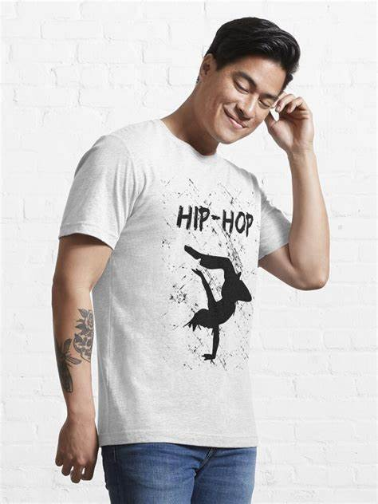
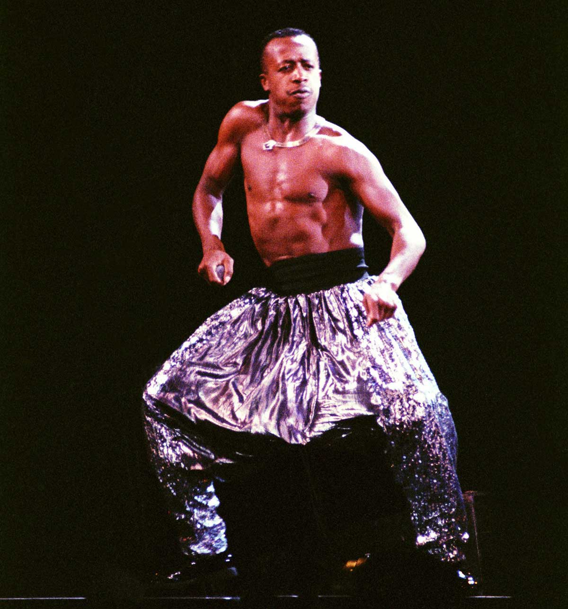
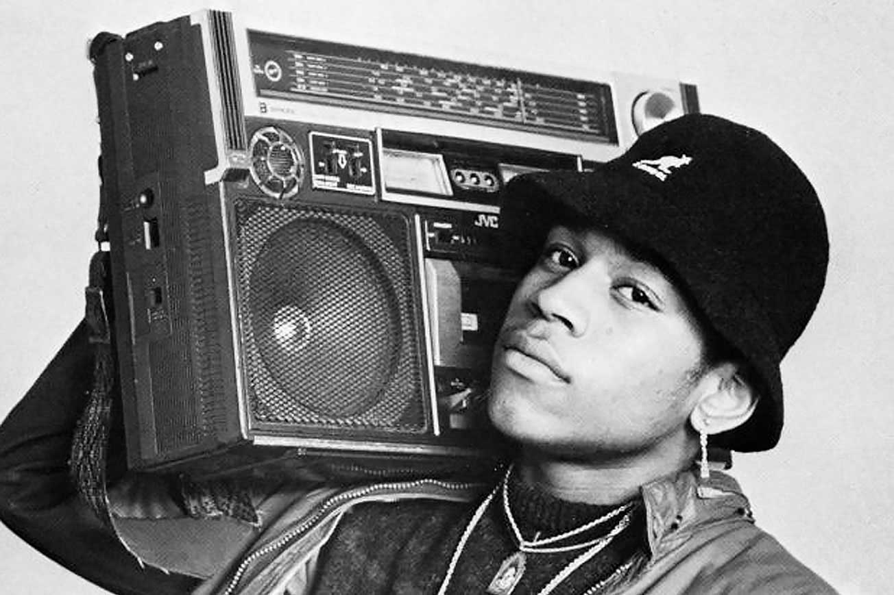

Hip Hop Fashions
Our History
Everyone knows hip-hop fashion when they see it, but it is becoming increasingly more difficult to define. One can point to a specific rapper or era, but it never captures the entire picture. As hip-hop has moved into the mainstream, the lines are blurred between what is and is not considered hip-hop. Yet there is an underlying idea that explains the progression and evolution of hip-hop style: It’s all about attitude.
Hip-hop is not only a genre of music, a form of dance, or a way of dressing. Hip-hop is a culture. Emerging from the Bronx in New York City, the hip-hop lifestyle – with its music, DJing, dancing and graffiti – provided an escape from a myriad of societal, economic, political, and cultural forces.
Our People
Run , MC
The group most responsible for establishing and defining hip hop’s trademark “street” look was Run-DMC, who famously adopted Adidas tracksuits and laceless shell-toed sneakers as their signature uniform. This look was inspired by the style of New York City b-boys at the time. By adopting this street look, the group rejected the highly glamorous looks of early hip hop — such as those of Afrika Bambaataa and DJ Grandmaster Flash — in favor of a grittier (although still flashy) look.
LL Cool J , MC
Hip Hop culture is something dear to LL Cool J being a long-standing act in the music industry. Cool J states over our Zoom call, “since I started, fashion, and specifically streetwear, has always been something that I loved. I just felt like there’s room. People want something flavorful, but they want it to be from the people that really built [street] culture. A lot of people are playing in the streetwear game when the reality is there are a lot of outsiders playing in the culture.”